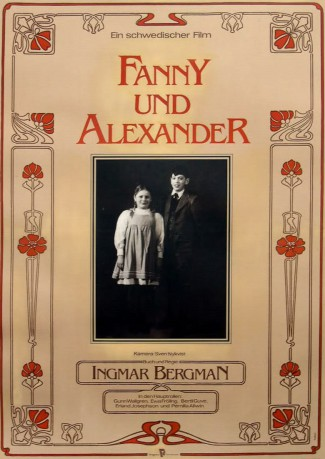
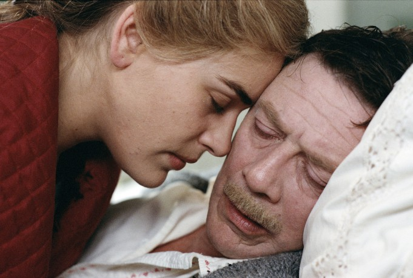
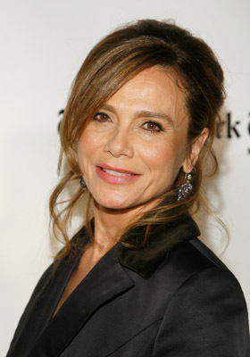
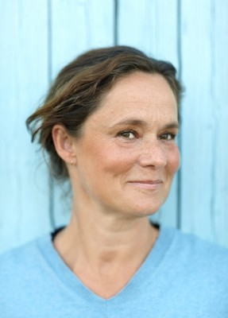
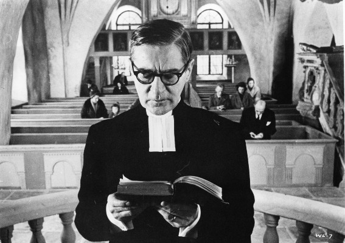
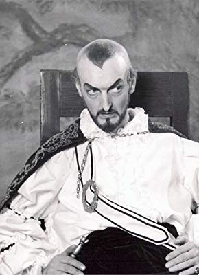
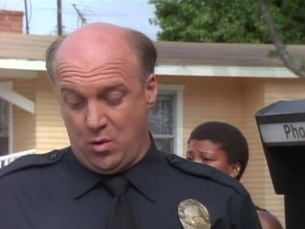
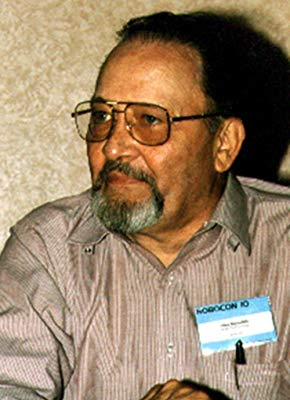

#9501 Fanny und Alexander
Alternativ: Fanny and Alexander (Englischer Titel)
Auszeichnungen: 4 Oscars gewonnen für 2 Oscars nominiert 1 GoldenGlobes gewonnen 1 BAFTA-Awards gewonnen
 
 IMDB-Wertung: 8.1 / 10
IMDB-Wertung: 8.1 / 10  Metascore: 0
Metascore: 0 
Die Geschwister Fanny und Alexandre sehen sich kurz nach Weihnachten mit dem plötzlichen Tod ihres geliebten Vaters konfrontiert. Ihre Mutter heiratet sehr bald einen Bischof und für die Kinder beginnt ein neues Leben...
Jahr: 1982
Dauer: 189 Minuten
FSK: 16
Land: Schweden Studio: TobisTonspuren:
Untertitel: Deutsch,
Auflösung: 1080p (1792x1080) Größe: 13414 MB
Genre: Drama
Regisseur:  Ingmar Bergman
Ingmar Bergman
Drehbuch: Ingmar Bergman
Soundtrack: Daniel Bell
Darsteller:
- Kristina Adolphson als Siri - Ekdahlska huset
- Börje Ahlstedt als Carl Ekdahl - Ekdahlska huset
- Pernilla Allwin als Fanny Ekdahl - Ekdahlska huset
- Kristian Almgren als Putte Ekdahl - Ekdahlska huset
- Carl Billquist als Police Superintendent Jespersson - Ekdahlska huset
- Axel Düberg als Witness to Bishop's Death - Ekdahlska huset
-  Allan Edwall als Oscar Ekdahl - Ekdahlska huset
- Siv Ericks als Alida - Ekdahlska huset
- Ewa Fröling als Emilie Ekdahl - Ekdahlska huset
- Bertil Guve als Alexander Ekdahl - Ekdahlska huset
- Sonya Hedenbratt als Aunt Emma - Ekdahlska huset
- Jarl Kulle als Gustav Adolf Ekdahl - Ekdahlska huset
- Käbi Laretei als Aunt Anna von Bohlen - Ekdahlska huset
- Mona Malm als Alma Ekdahl - Ekdahlska huset
-  Lena Olin als Rosa - Ekdahlska huset
- Gösta Prüzelius als Doctor Fürstenberg - Ekdahlska huset
- Christina Schollin als Lydia Ekdahl - Ekdahlska huset
- Hans Strååt als Clergyman at Wedding - Ekdahlska huset
-  Pernilla August als Maj - Ekdahlska huset
- Gunn Wållgren als Helena Ekdahl - Ekdahlska huset
- Marianne Aminoff als Blenda Vergérus - Biskopsgården
- Harriet Andersson als Justina - Biskopsgården
- Jan Malmsjö als Bishop Edvard Vergerus - Biskopsgården
- Anna Bergman als Hanna Schwartz - Teatern
-  Gunnar Björnstrand als Filip Landahl - Teatern
- Nils Brandt als Mr. Morsing (Actor) - Teatern
- Gus Dahlström als Props Man - Teatern
- Ernst Günther als Rector Magnificus - Teatern
- Heinz Hopf als Tomas Graal (Actor) - Teatern
- Sune Mangs als Mr. Salenius (Actor) - Teatern
- Per Mattsson als Mikael Bergman (Actor) - Teatern
-  Georg Årlin als Colonel - Teatern
- Erland Josephson als Isak Jacobi - Jacobis hus
- Stina Ekblad als Ismael Retzinsky - Jacobis hus
- Mats Bergman als Aron Retzinsky - Jacobis hus
-  John Hostetter als Carl Ekdahl (uncredited)
 Mona Marshall als Alexander Ekdahl (uncredited)
Mona Marshall als Alexander Ekdahl (uncredited)- Magnus Nordstrand als Young Man in Theatre (uncredited)
- Margareta Pettersson als Funeral guest (uncredited)
-  Mike Reynolds als Oscar Ekdahl (uncredited)
 Allan Rich als Gustav Adolf Ekdahl (uncredited)
Allan Rich als Gustav Adolf Ekdahl (uncredited) Peter Stormare als Young Man who Helps Isak with Coffer (uncredited)
Peter Stormare als Young Man who Helps Isak with Coffer (uncredited)- Pernilla Wahlgren als Esmeralda - Biskopsgården (uncredited)
- Mel Welles als Bishop Edvard Vergérus / Isak Jacobi (uncredited)
- Patricia Gélin als Statue - Ekdahlska huset
- Majlis Granlund als Miss Vega - Ekdahlska huset
- Maria Granlund als Petra Ekdahl - Ekdahlska huset
- Eva von Hanno als Berta - Ekdahlska huset
- Olle Hilding als Old Clergyman - Ekdahlska huset
- Svea Holst als Miss Ester - Ekdahlska huset
Datei: X:\1982\Fanny und Alexander (1982, FSK16, 1792x1080).mkv seit 05.09.2018
Festplatte: HD 1980-1986
 Es gibt insgesamt 31 Filme in der Gruppe '1982'
Es gibt insgesamt 31 Filme in der Gruppe '1982'